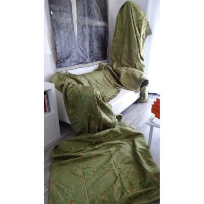
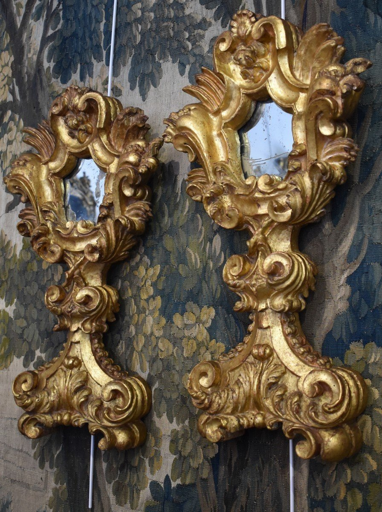
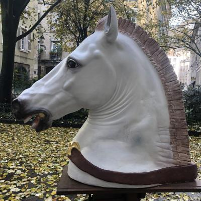

copie antic
ACCUEIL
NOUVEAUTES
OBJETS
ANTIQUAIRES
MAGAZINE
SERVICES
INFO
Acces pro
.
Achetez des antiquités et objets d'art présentés par des antiquaires professionnels
SÉLECTION DES ANTIQUAIRES

Troisième Paire De Tentures En Soie Lyonnaise XIXème Second Empire Et 2 Lambrequins Assortis
Galerie PhC

Paire De Grandes Monstrances En Bois Sculpté Et Doré Venise Italie Début XVIII ème
Antiquités Sordes
Francesco Guardi (1712-1793)-école ou atelier, vue De Venise vers 1800
Rose Couleur

ENORME Tête de cheval plâtre d'atelier fin XIXe 100x85 cm d'après l'antique académie dessin
Antichità Castelbarco
NOUVEAUTÉS SUR 24 HEURES